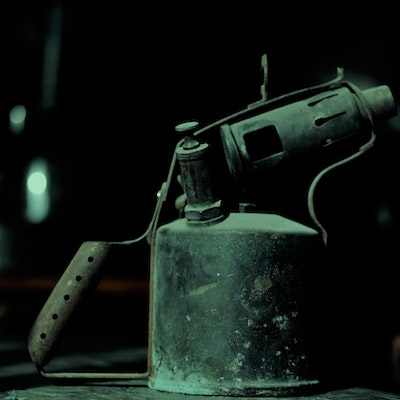

Encendido Y Uso
Extraccion del Quemador
Apaga la estufa y asegúrate de que esté fría antes de comenzar el proceso de extracción. Retira las parrillas y desmonta la tapa protectora que cubre el quemador. Desconecta el suministro de aceite y electricidad de la estufa para evitar cualquier riesgo de accidente. Desliza hacia delanteel quemador desomntando asi la estructura que mantienen el quemador en su lugar y procede a sacar cuidadosamente el artefacto. Inspecciona visualmente el quemador para identificar cualquier acumulación de suciedad, residuos o obstrucciones. Utiliza un cepillo suave o un paño húmedo para limpiar cuidadosamente la superficie del quemador y eliminar cualquier suciedad o grasa. Si hay obstrucciones en los orificios del quemador, utiliza un alambre delgado o un cepillo de alambre para desbloquearlos. Limpia también los conductos de gas o eléctricos conectados al quemador para asegurarte de que estén libres de obstrucciones. Una vez que hayas limpiado el quemador y los conductos, vuelve a colocar el quemador en su lugar de encastre y a conectar el tubo del suministro de aceite o electricidad.
Encendido del Fuego
Para el encendido del fuego se debe tener en cuenta que el correcto encendido del mismo debe ser con total precausion y se deben utilizar elementos de proteccion
- Asegúrate de que la estufa esté ubicada en un área bien ventilada y libre de obstrucciones
- Vierte el aceite en el interior del quemador y asegurate que esté frío
- Utiliza un soplete para calentar el aceite, Una vez que esté caliente, asegurese que se produzca una leve flama.
- encienda la turbna de aire para avivar la llama y comience a levantar temperatura.
- una vez que observe que la llama este intensa y de color azul abra la canilla y comience a generar un caudal de gotas de aceite.
Recuerda que estos pasos son generales y pueden variar dependiendo del modelo y las instrucciones específicas de la estufa. Es importante consultar el manual del fabricante y seguir las pautas de seguridad recomendadas
Goteo del Aceite
Lo que respecta al goteo del aceite. es que se necesita que el mismo sea controlado y facil de
manipular. el goteo del aceite quemado determina las cantidades de calorias que se pueden producir
al momento de la quema del aceite.
se debe mencionar que poco caudal de goteo se va a reflejar en una menor capacidad de calefaccion
por lo que se puede determinar el tiempo de consumo del combustible. y una mayor caudal de goteo
determina mayor quema pero requere ademas de un mayor caudal de aire para que este no se ahogue y se
apague.
Es decir, mientras menos caudal menos calorias expulsa y mientras mas caudal se libera mas calorias
se obtienen pero eso demanda mayor caudal de aire.